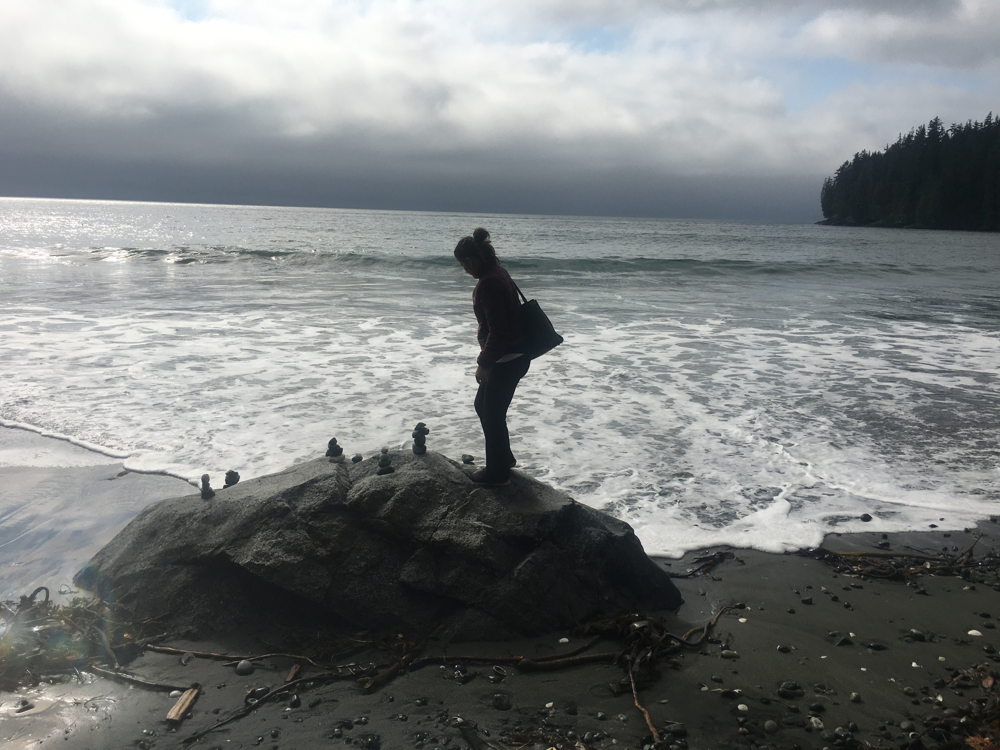

Anastasiya Andrushchak
For some of them, you need to click anywhere on the screen to see the art. Others, try pressing up or down keys to change the effect. Enjoy :)
Painted Fractures
Coloured Circle
Randomly Squared Squares
First Happy Accident
First geometric sequence
Fancy Lines
Free Flow

Experimentation - Unfinished work
First geometric sequence extended
Alchemist
Path Finder
Circle of Green
Chain Pattern
Moving